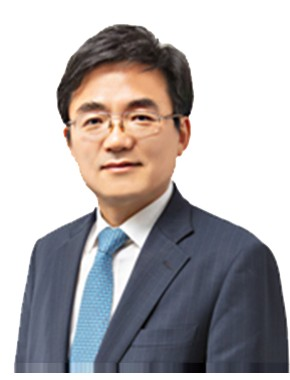

형사
17년 검사 경력. 수사 초기 대응부터 공판까지 수사기관의 시각을 알고 변론합니다.

대표변호사공인회계사
공인회계사 겸 부장검사 출신. 인천·전주·대구·수원·서울북부지검을 거쳐 서울중앙지검 부부장검사, 광주지검 목포지청·부산지검·수원지검 평택지청 부장검사를 역임했습니다. 회계와 수사 양쪽을 아는 시각으로 사건의 구조를 먼저 봅니다.
17년 검사 경력. 수사 초기 대응부터 공판까지 수사기관의 시각을 알고 변론합니다.
공인회계사 출신. 회계 장부에서 사건의 구조를 먼저 읽습니다.
금융지주 사외이사 경험을 바탕으로 기업 의사결정의 법률 리스크를 봅니다.
지금 상황을 알려주시면 박종일 변호사가 직접 검토해 드립니다.